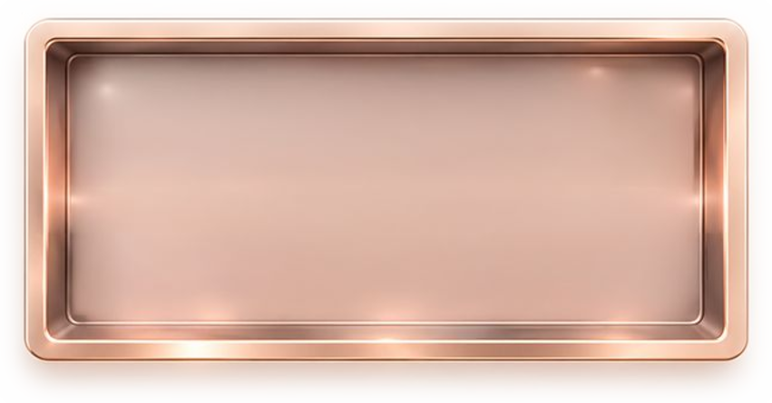

Shortcuts: S this panel · Esc start screen · Enter start / next · on a touch screen tap the top-left corner five times. Rates and fees are in idea2/js/config.js; each scan is one call to the coin analyzer.
idea2/js/config.js